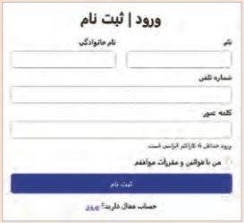
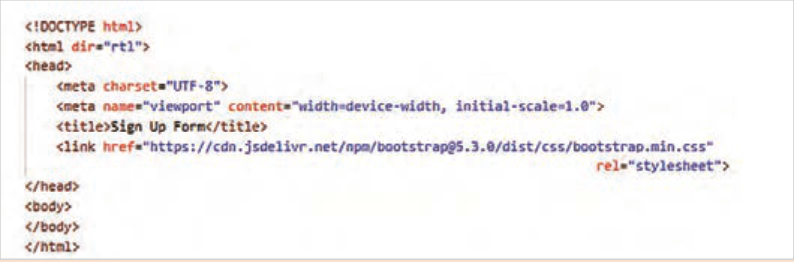
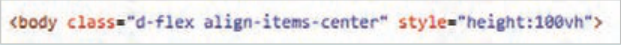
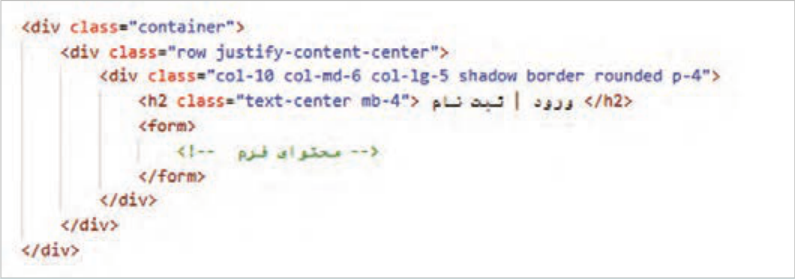
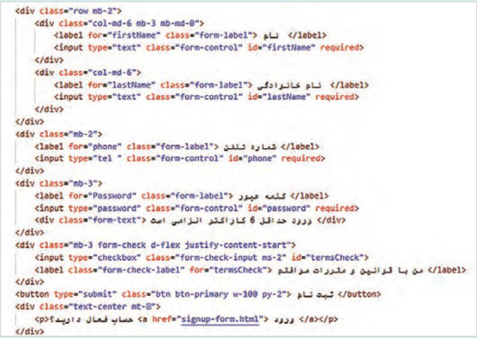
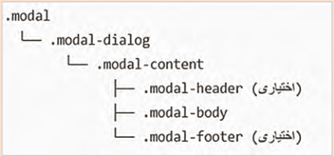
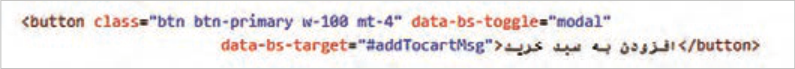
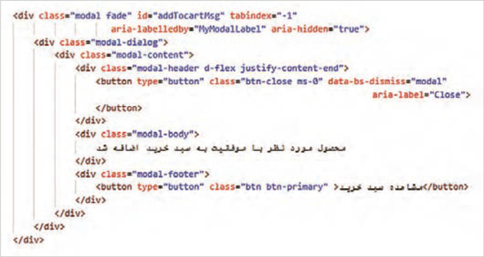
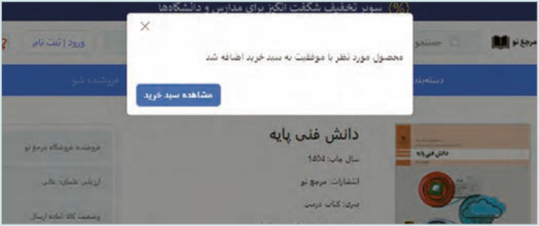
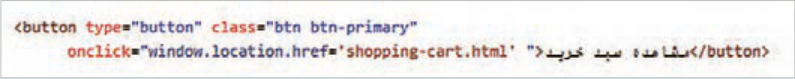

صفحه ۱۸۰
بوتاسترپ دارای مجموعهای از کلاسهای آماده برای طرحبندی انواع فرمهاست. به کمک این کلاسها میتوان فرمهای واکنشگرا و جذاب را با سرعت بالا و کمترین نیاز به کدنویسی ایجاد نمود. جدول ٢١ حاوی برخی کلاسهای فرم در بوتاسترپ 5 است.
جدول 12 کلاسهای فرم
نام کلاس
کاربرد
form-control
تعیین استایل فیلدهای ورودی مانند input, textarea و select
form-labelتعیین استایل برچسبهای فرم form-checkاستایلدهی به کادرهای تأیید و دکمههای رادیویی
form-check-label
این کلاس برای متن کنار کادر تأیید یا دکمه رادیویی استفاده میشود.
form-check-inputبرای استایلدهی به کادر تأیید و دکمه رادیویی
form-text
این کلاس برای نمایش توضیح کمکی زیر یک فیلد فرم استفاده میشود.
بیشتر بدانید
طراحی فرم ثبت نام در این کارگاه یک فرم ثبتنام را به شکل روبهرو توسط کلاسهای بوتاسترپ طراحی خواهید کرد.

1 یک صفحه وب با نام signup-form.html ایجاد کنید و کدهای اولیه سند HTML را درون آن بنویسید. سپس متاتگهای charset، viewport، title و لینک CDN بوتاسترپ را در بخش <head> به صفحه اضافه کنید. همچنین جهت نمایش صفحه را بهصورت rtl تنظیم کنید.

صفحه ۱۸۱
2 در صفحه signup-form.html تنها یک فرم نمایش داده میشود. این فرم باید در راستای افقی و عمودی در وسط صفحه ظاهر گردد. بنابراین ویژگیهای برچسب body را به شکل زیر تنظیم کنید:

vh یک واحد اندازهگیری در CSS است که مخفف Viewport Height است. کلمه viewport به بخشی از صفحه اشاره دارد که در معرض دید کاربر است. 1vh برابر 1% ارتفاع viewport است. بنابراین، height:100vh به معنای آن است که ارتفاع عنصر <body> باید برابر 100% ارتفاع viewport باشد.
به عبارت دیگر، این عنصر باید تمام ارتفاع صفحه را اشغال کند.
استفاده از کلاسهای d-flex و align-items-center باعث میشود که محتوای بخش body در وسط صفحه قرار گیرد.
3 درون عنصر body یک عنصر نگهدارنده با محتوای شکل زیر ایجاد کنید:

4 پهنای فرم باید در دستگاههای مختلف کنترل شود. برای اینکار بهتر است از کلاسهای grid استفاده شود تا بسته به اندازۀ دستگاه، پهنای عنصر نگهدارنده فرم تغییر نماید. در کد فوق یک عنصر نگهدارنده با کلاس row ایجاد شده است و درون آن تنها یک ستون حاوی فرم و عنوان آن موجود است. با توجه به اینکه فرم درون ستون grid قرار دارد، بنابراین پهنای فرم وابسته به پهنای ستون تغییر خواهد کرد.
کلاس justify-content-center باعث قرار گرفتن محتوای عنصر نگهدارنده در وسط صفحه خواهد شد.
کلاسهای col-10، col-md-6 و col-lg-5 پهنای ستون grid را در دستگاههای موبایل، تبلت و دسکتاپ تعیین میکنند.
صفحه ۱۸۲
5 محتوای فرم را به مطابق کدهای شکل زیر در محل تعیین شده در کد فوق، به صفحه اضافه کنید:

فایل را ذخیره کنید و نتیجه را در مرورگر بررسی کنید.
6 رنگ متن عنوان فرم را به رنگ آبی و رنگ متن برچسبها را به رنگ خاکستری تغییر دهید. این کار را توسط کلاسهای بوتاسترپ انجام دهید.
7 زیرخط پیوند «ورود» در پایین صفحه را توسط کلاس بوتاسترپ حذف کنید.
بیشتر بدانید
Modal
مُدال یک رابط کاربری است که بهصورت یک کادر محاورهای شناور در بالای صفحه، نمایش داده میشود و کاربر را وادار میکند که قبل از بازگشت به صفحه وب، با آن تعامل داشته باشد. این عنصر معمولاً برای نمایش اطلاعات اضافی، تأیید کاربر، فرمها یا تعاملات دیگر با کاربر استفاده میشود.
فشردن کلید Esc، کلیک روی دکمه close یا ناحیهای خارج از پنجره مدال باعث بسته شدن کادر محاورهای میشود.
پنجرۀ مدال دارای سه بخش header، body و footer است. این بخشها توسط کلاسهای -modal header، modal-body و modal-footer ایجاد میشوند. مجموعه این سه بخش درون یک عنصر نگهدارنده با کلاس modal-content قرار میگیرند.
مدال یک عنصر وابسته به جاوااسکریپت است، پس اضافه کردن فایل جاوااسکریپت بوتاسترپ قبل از <body/> ضروری است.
برای نمایش کادر محاورهای نیاز به یک عنصر فعالکننده مانند دکمه است.
صفحه ۱۸۳

ساختار کامل مدال در Bootstrap
نمایش پیغام اضافه شدن محصول به سبد خرید توسط Modal
کار کارگاهی
در کارگاههای قبلی، صفحه نمایش اطلاعات محصول (product-details.html) را طراحی کردید. در برخی سایتهای فروشگاهی، زمانی که کاربر روی دکمه «افزودن به سبد خرید» کلیک میکند، یک پیغام با محتوای «محصول مورد نظر به سبد خرید اضافه شد» نمایش داده میشود. در این کارگاه قصد داریم صفحه product-details.html را به همین طریق تغییر دهیم.
فایل product-details.html را باز کنید و دکمه افزودن به سبد خرید را به مطابق کد شکل زیر تغییر دهید:

با کلیک روی این دکمه کادر محاورهای (مُدال) با شناسه addTocartMsg ظاهر میشود.
btn: استایل یک دکمۀ بوتاسترپ را به عنصر <button> اختصاص میدهد.
"data-bs-toggle="modal: مشخص میکند این دکمه برای باز کردن مدال است.
"data-bs-target="#addToCartMsg: مشخص میکند کدام مدال باز شود.
کد مُدال را بعد از برچسب <button/> به صفحه اضافه کنید:

صفحه ۱۸۴

tabindex ترتیب انتقال فوکوس (تمرکز) روی عناصر را هنگام استفاده از کلید Tab مشخص میکند.
عبارت tabindex=-1 به معنای آن است که مُدال قابلیت دریافت فوکوس توسط کلید Tab را ندارد.
btn-close استایل دکمه بستن در پنجره مُدال را بهصورت یک علامت ضربدر مشخص میکند.
data-bs-dismiss="modal": رفتار دکمه close را مشخص میکند؛ بهصورتی که وقتی کاربر روی دکمه کلیک نماید، مُدال بسته شود.
دکمه close بالای پنجره مدال در حالت پیشفرض در سمت راست پنجره ظاهر میشود. به همین دلیل از کلاسهای d-flex، justify-content-end و ms-0 برای تنظیم محل دکمه استفاده شده است.
بعد از کلیک روی دکمه «مشاهده سبد خرید»، باید صفحه shopping-cart.html باز شود. برای اینکار از ویژگی onclick دکمه استفاده کنید و مقدار آن را برابر یک دستور جاوااسکریپت طبق شکل زیر قرار دهید:

کروسل (Carousel)
کروسل یک ابزار مبتنی بر جاوااسکریپت است که برای ایجاد یک مجموعه اسلاید یا گالری تصاویر افقی استفاده میشود. کروسل امکان نمایش چند محتوا یا تصویر را در یک فضای محدود فراهم میکند؛ بهطوریکه کاربران بتوانند با استفاده از دکمههای کنترلی یا با کشیدن (swipe)، محتواهای بعدی را مشاهده کنند.
در یک سایت فروشگاهی، کروسلها یا اسلایدرها امکان نمایش مجموعهای از محصولات یا محتوای تبلیغاتی را بهصورت چرخشی فراهم میکنند. استفاده از کروسل تجربۀ کاربری بهتری را برای کاربران ارائه میکند.
برای ایجاد یک کروسل بوتاسترپ از کلاس carousel و کلاسهای زیرمجموعه آن استفاده میشود.
جدول٣١ اسامی کلاسها و کاربرد آنها را توصیف میکند: